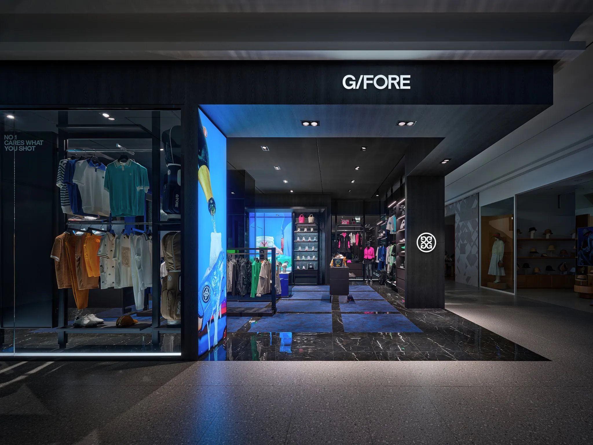
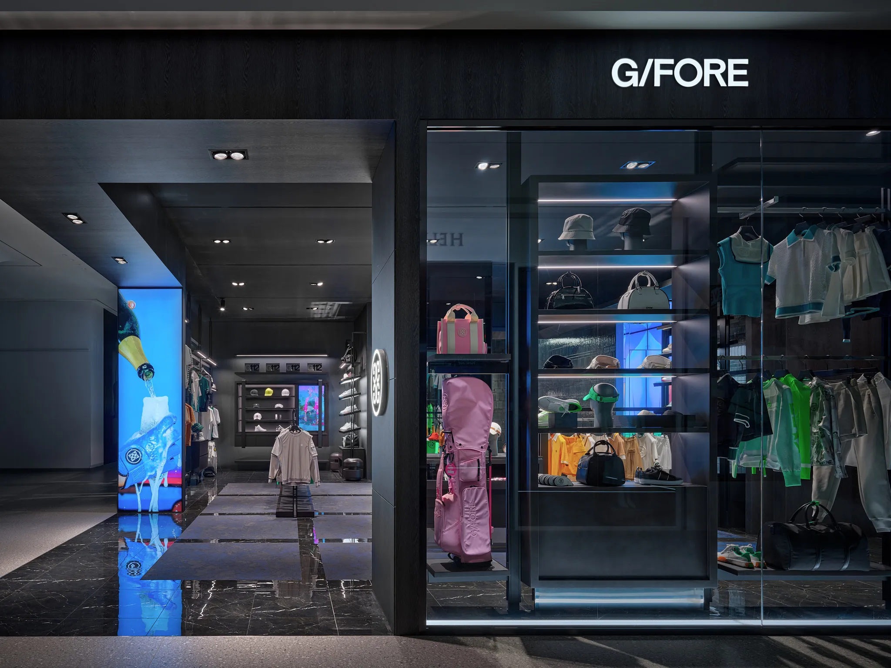
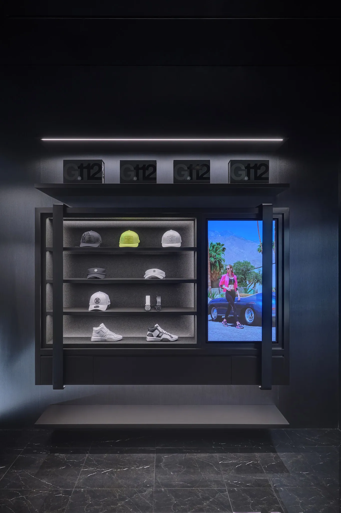
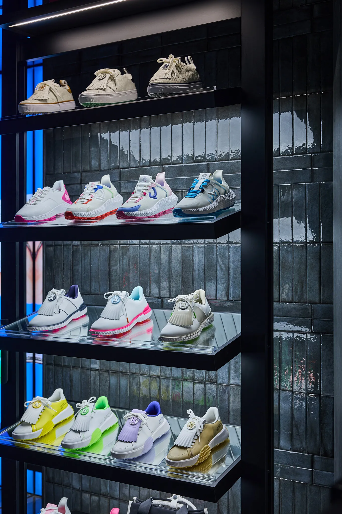
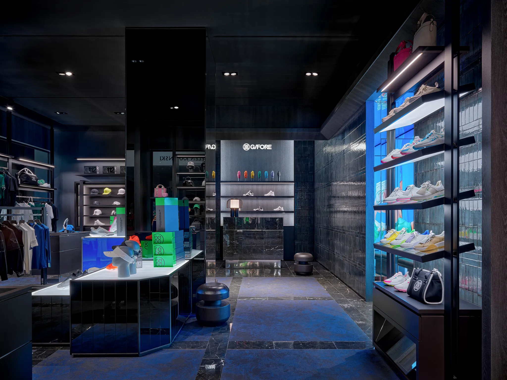
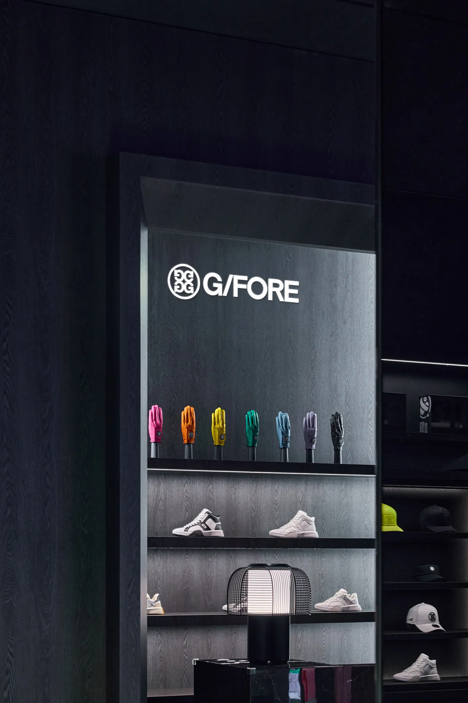
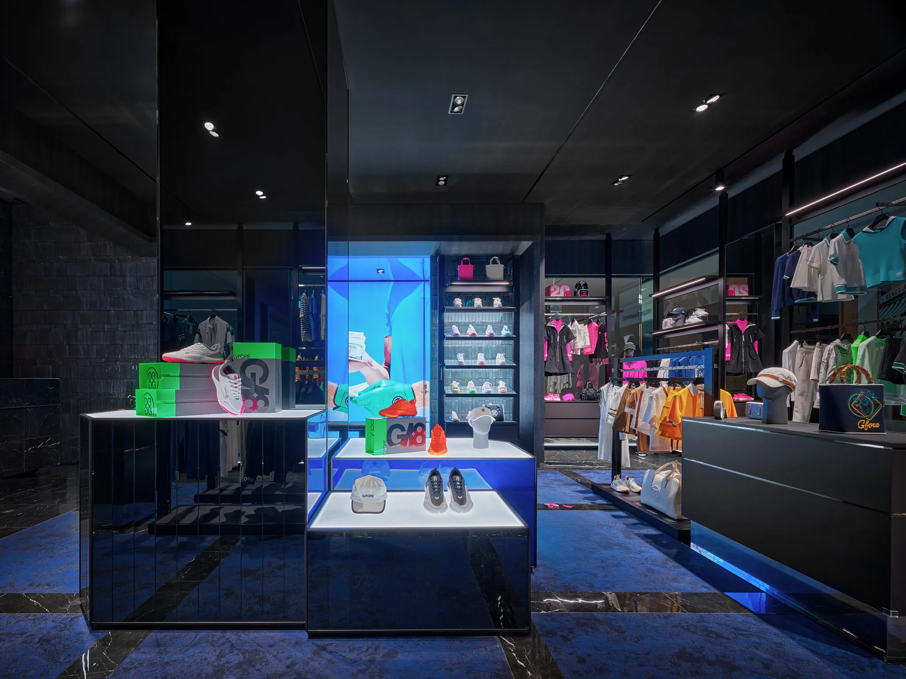
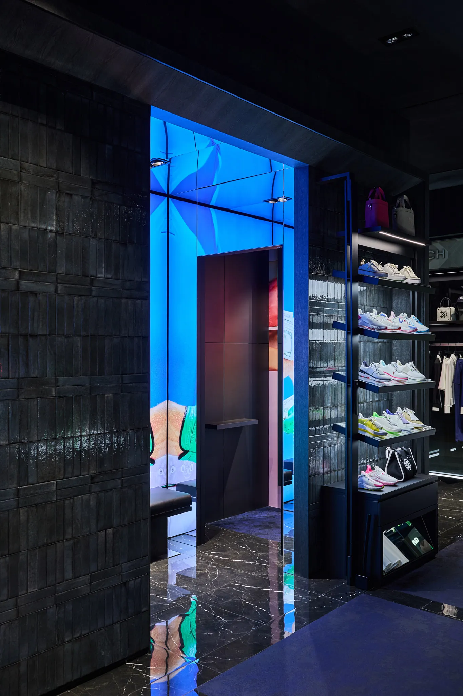
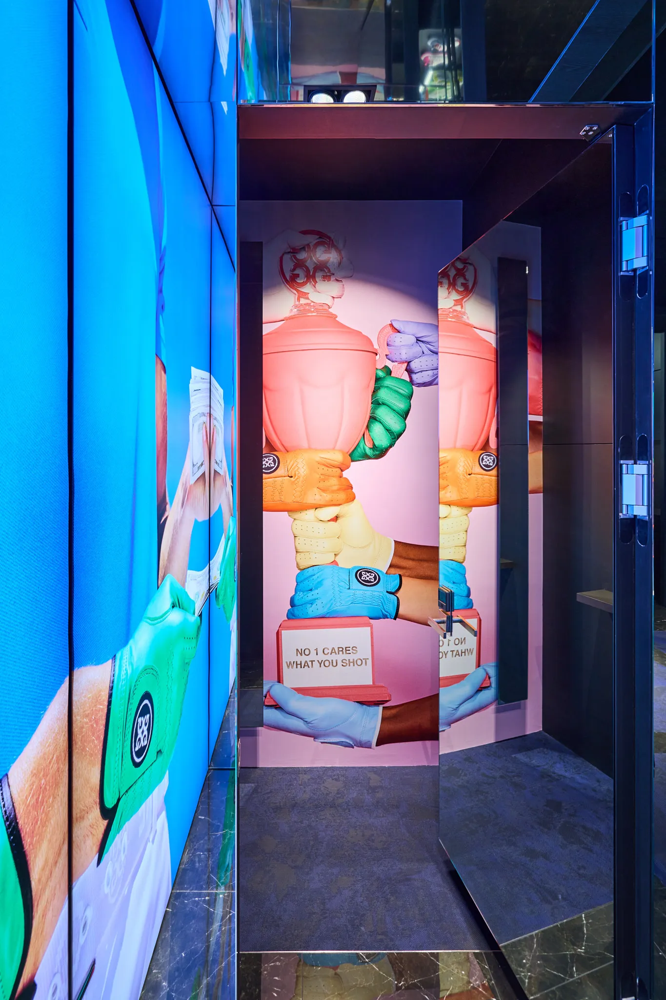

('24)G/FORE Store Identity Design
Further Development Project
Our firm previously developed two distinct Store Identities (SI) for the brand, designated as G.fore 1.0 and G.fore 2.0. For the project I led, the client requested a "1.5" version to bridge the gap between the two.
To put it simply, version 1.0 was built on a black foundation, while 2.0 featured a blue-toned palette. We established the new 1.5 identity by integrating blue color elements into the overall black design base.
To achieve this, I worked closely with the client to carefully identify the specific aspects they liked from the previous designs, as well as the areas they felt required improvement.







